转载请注明来源：http://shicaiD.github.io
这篇文章主要讲解了pdf.js的基本使用。如有更好的见解，望不吝赐教！
pdf.js框架的魅力所在，为其为HTML5实现的，无需任何本地支持，而且对浏览器的兼容性也是比较好，要求只有一个：浏览器支持HTML5就好了！
PDF.js传送门： https://github.com/mozilla/pdf.js
以版本v1.5.188为例，先看看pdf.js的作用域：
| Browser | Supported | Automated Testing | Notes |
|---|---|---|---|
| Firefox Stable | yes | Windows and Linux | |
| Chrome Stable | yes | Windows and Linux | |
| Opera Stable | yes | none | |
| Android | limited | none | Android’s Web Browser version 4.0 or below lacks a number of features or has defects, e.g. in typed arrays or HTTP range requests |
| Safari | limited | none | Safari (desktop and mobile) lacks a number of features or has defects, e.g. in typed arrays or HTTP range requests |
| IE10+ | limited | none | IE 10 or above may lack of features or may have defects. |
| IE9 | limited | none | IE9 lacks a number of features and most notably typed arrays which causes subpar performance. |
| <=IE8 | NO | none | IE8 and below are missing too many features to be supported. |
1. 准备工作
1.1 jQuery
1.2 PDF.js
- git clone git@github.com:mozilla/pdf.js.git 下载最新版
- 自行选择版本->https://github.com/mozilla/pdf.js/tags
我这里使用的版本是
jquery-2.1.1
pdfjs-1.5.188
jQuery我就不多说了，不懂得请到传送门。
解压下载的PDF.js后，看到的界面应该是这样的：
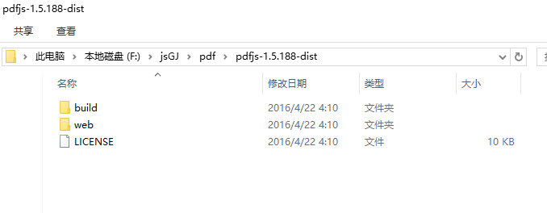
2. 本地PDF文件
当然，直接打开 web/viewer.html 是不行的，我这里已经在项目中部署使用了，那我们直接打开 web/viewer.html 来看看它是什么样子：
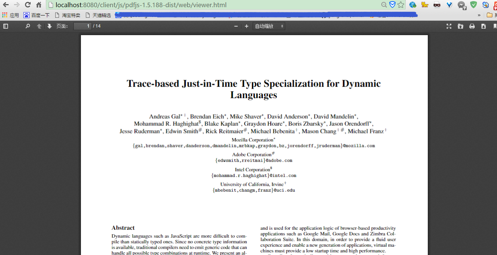
哟西！没问题！可以搞！那么问题来了，这个pdf文件哪来的？向下看...
2.1 手动更换
我们可以看到web 目录的viewer.js 文件，开头就有这样一句：
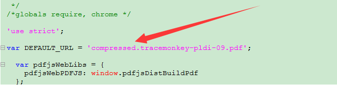
同时，我们可以在web 目录下找到这个compressed.tracemonkey-pldi-09.pdf 文件，同理我们也应该可以换成自己的PDF文件！来试试…
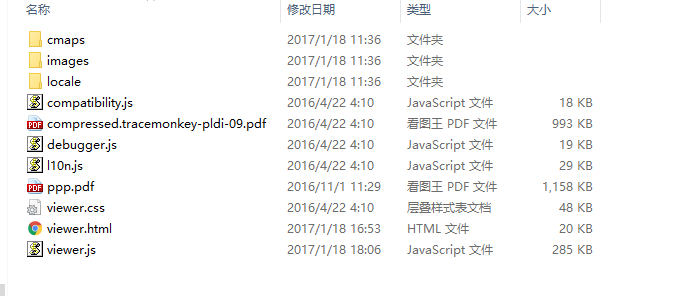
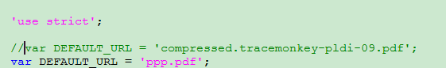
好了，我们来运行一下看看效果！
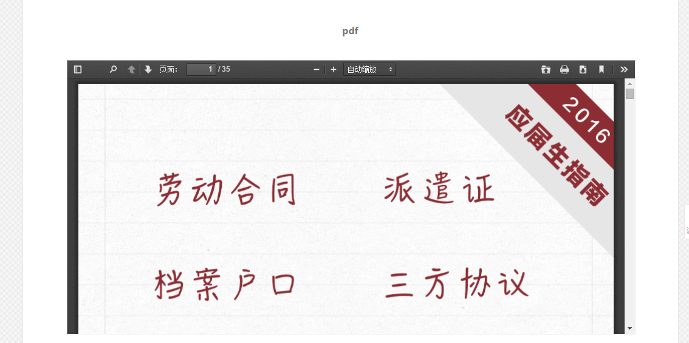
完美加载自己的PDF文件！
2.2 自动更换
我们每次加载pdf都要自己改一次未免太麻烦了，是的，pdf.js当然提供了我们想要的。我们可以查看viewer.js 里面有这样一行代码
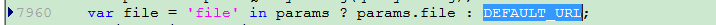
可以看出，在没有file 参数传进来的时候，使用默认DEFAULT_URL 的值，也就是说，我们可以带参数
那么我们也试试：http://localhost:8080/client/js/pdfjs-1.5.188-dist/web/viewer.html?file=ppp.pdf
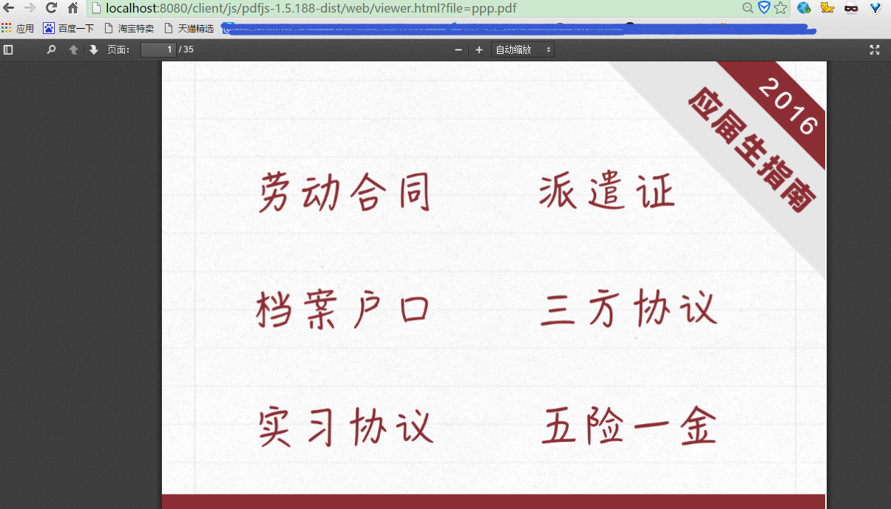
没问题哦。
如果pdf.js就这样用的话，确实简单。但是，我想要用的pdf文件不是本地的，而是来自其他服务器，那就麻烦了点。
3. 远程PDF文件
初次接触，这可折腾死我了。我想加载http://* * * .com/* * * .pdf 文件并预览出来，当我把http://* * * .com/* * * .pdf 传进去，结果差强人意！
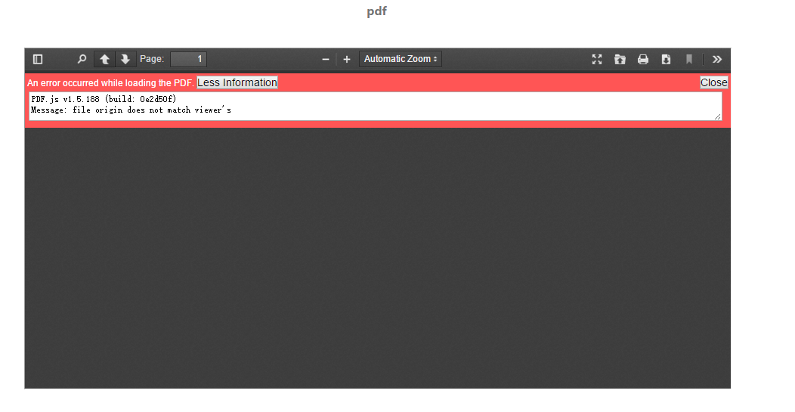
出错了！来看看原因：
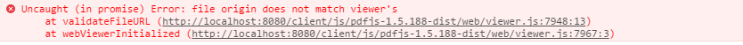
我们可以发现，在viewer.js 中有这样一个方法function validateFileURL(file) ，是因为http://* * * .com/* * * .pdf 文件的域名和我的http://localhost:8080 不匹配不管他，我注释掉先。
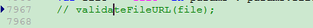
这下应该没问题了吧，再试试！
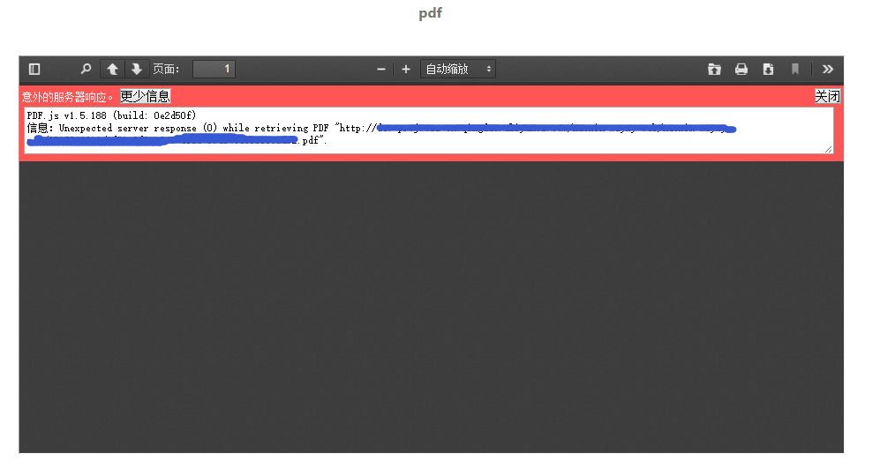
日了狗！怎么又出现问题！F12，发现这样一句话：
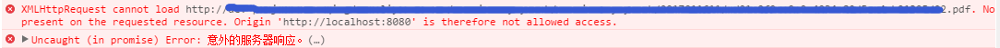
查了一下，这句话的意思就是我们请求http://* * * .com/* * * .pdf 这个文件时，返回头Access-Control-Allow-Origin 并不包含我们http://localhost:8080 ，换句话说，就是我们跨域请求，服务器没有把我们的域名加到跨域的白名单里。关于跨域的相关知识我就不多说了，我也不太懂。。这里就给出解决方案。
- 最简单粗暴的方法就是，在
http://* * * .com/* * * .pdf这个文件所在服务器中，把Access-Control-Allow-Origin设为 *，即允许所有跨域请求。 - 同理，我们在
http://* * * .com/可以添加指定的域名，在这个域名实现跨域请求http://* * * .com/* * * .pdf就没问题了。我没试过把http://localhost:8080加进去，我申请了花生壳的域名：http://shicaid.imwork.net。
我们配置好后再看看：
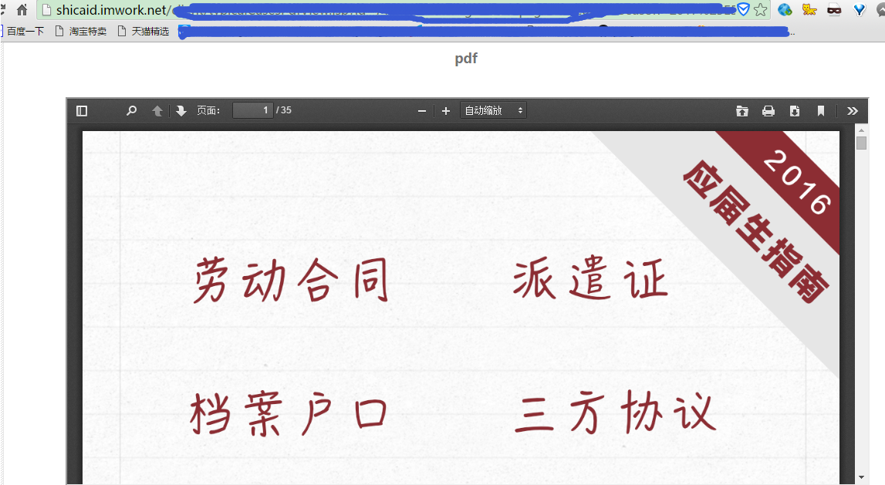
终于好了。。不容易呀！网上pdf.js的教程特别少，github上全英文。。伤不起，写下这篇文章就希望大家少踩坑吧。
ps.除了pdf.js外，还有其他插件，但发现只有pdf.js才能支持微信内置浏览器预览pdf。。